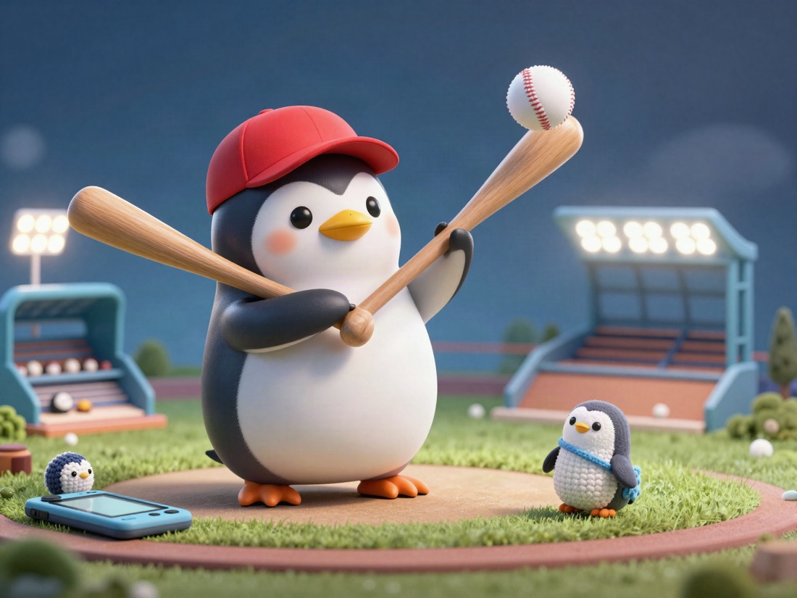
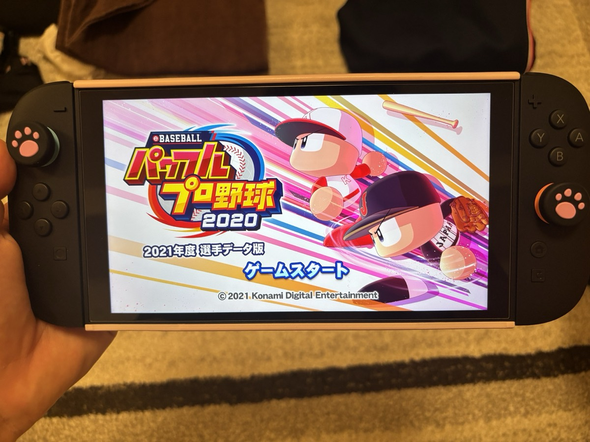

⚾ I Played Pawapuro Again After a Long Time! 🎮

Pawapuro is a hugely popular baseball game in Japan.
I have played Pawapuro from kindergarten all the way into adulthood.
-
🧸 KindergartenPawapuro on DS
-
🎒 Elementary schoolPawapuro on 3DS
-
🏫 Middle & high schoolPawapuro on Nintendo Switch

I have basically been playing Pawapuro my whole life.
Thanks to this game, I became very knowledgeable about Japanese professional baseball players.
My favorite thing about this game is, more than anything, how many home runs you can hit.
In a normal baseball game, the score might be 6–4 or 1–3 — often about the same kind of score difference as soccer.
But in the world of Pawapuro, the batters are seriously strong.
The pitchers are amazing too, but above all, it is so easy to hit home runs.
I could not stop playing because hitting a home run felt so good.
The pitchers also throw breaking balls that curve an unbelievable amount, which is really fun too!
Thanks to that, every year I could not finish my summer vacation homework. 🙂↕️
That was my introduction to Pawapuro, a game loved by baseball fans in Japan.